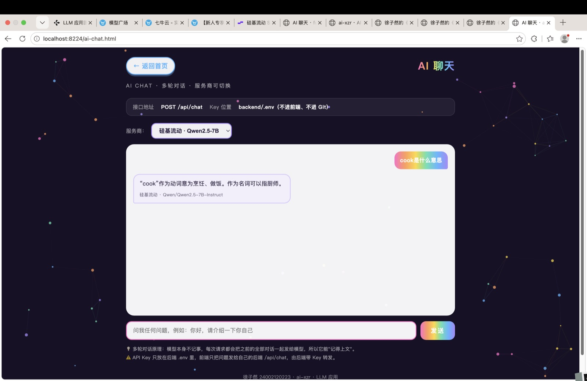
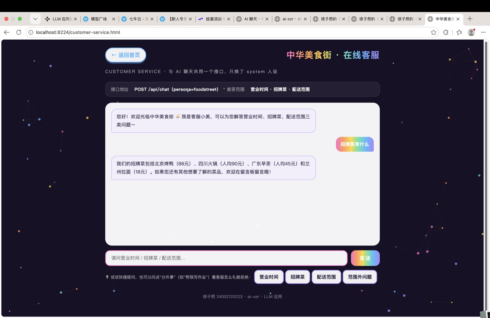
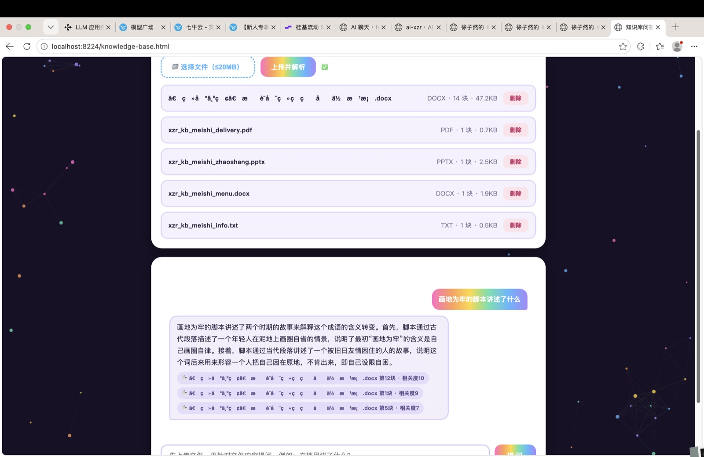
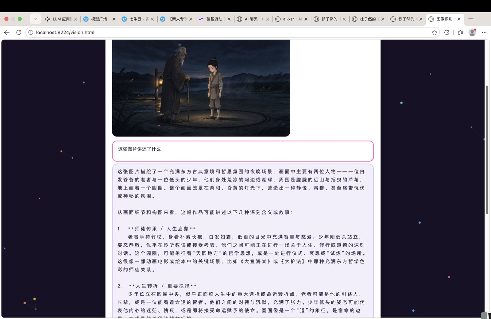
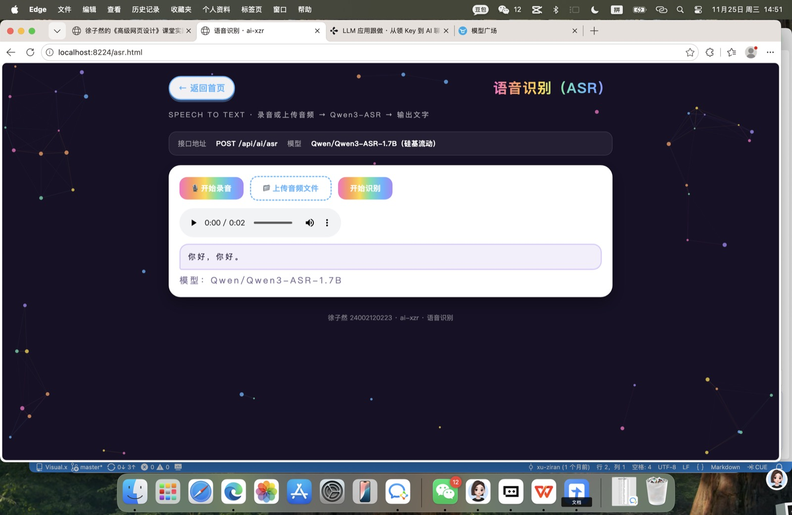

CLASS SHOWCASE · 课堂实践展示
LLM 应用 · 五个实践任务全记录
本页记录本次 LLM 应用课的五个课堂实践：每个任务都配有实际操作截图和实现讲解。所有功能均由 Express 后端转发大模型 API 完成，API Key 只存在 backend/.env，前端与 Git 全库零残留。
📋 本节课做了什么
围绕"把大模型 API 用起来、用得安全、管得住、换得动"这条主线，完成了五个递进的实践任务：
技术栈：Express + fetch 转发硅基流动 / 七牛两家平台的 OpenAI 兼容接口；文件解析用 pdf-parse / mammoth / adm-zip；语音转写走 whisper 兼容端点。
实践一AI 聊天 · 多轮对话与 Key 安全

做了什么
从零搭起"前端页面 → Express 后端 → 大模型 API"的完整链路。前端只把对话发给自己的后端 /api/chat，由后端带着 Key 转发硅基流动，再把回答送回来。
怎么实现
- Key 安全：Key 只写在 backend/.env（.gitignore 排除，永不进 Git），前端源码、页面、Git 全库搜索零残留——前端只知道"问自己的后端"，根本接触不到 Key
- 多轮对话：前端维护完整的 messages 数组，每次提问把全部历史消息一起发过去，模型才能"记住"上文
- 等待体验：请求期间显示"正在思考…"气泡，回答返回后替换
验证
先问"我叫徐子然"，再追问"我刚才问了什么"——模型能准确答上来，证明多轮对话确实用的是完整 messages；把 Key 故意改错一位，页面显示"Key 无效或已失效"的中文友好提示而不是白屏。
实践二中华美食街在线客服 · 提示词工程

做了什么
把通用 AI 聊天改造成"中华美食街在线客服"：接口一行代码都没改，只把 system 提示词从通用助手换成了美食街客服人设（persona=foodstreet）。
system 提示词怎么写才能"管住"模型
- 定身份：开头锁定"你是中华美食街客服小美"，角色的边界先立住
- 白名单 + 给足事实：明确"只回答营业时间、招牌菜、配送范围三类问题"，并把这三类的真实数据直接写进提示词——模型有据可依就不会瞎编
- 给现成的拒绝台词：规定超出范围时"礼貌说明只服务这三类问题，并引导留言"，模型照着说就行，不会临场发挥
验证（5 问测试）
营业时间、招牌菜、配送费 3 个该答的全答对（价格精确到元）；"写一首诗""推荐健身房"2 个该拒的都礼貌拒绝并引导留言——5/5 符合预期。
实践三RAG 知识库 · 上传解析 + 检索问答

做了什么
完整的 RAG（检索增强生成）流程：上传 → 解析 → 切块入库 → 检索 → 拼提示词 → 回答并标注来源。
怎么实现
- 支持格式：TXT 直接读；PDF 用 pdf-parse；DOC/DOCX 用 mammoth；PPT/PPTX 用 adm-zip 解包后提取 XML 文本；超 20MB 拒收并友好提示
- 入库：全文按 ~500 字切块，连同文件信息存进 MySQL 两张表（xzr_kb_files / xzr_kb_chunks），页面可管理（列表 + 删除）
- 问答：把问题拆成关键词，检索相似度最高的 3 个片段，拼进 system 提示词，并规定"只依据资料回答，资料里没有就如实说没找到"
- 课程要求：控制台完整打印发给大模型的数据（含检索到的片段）和大模型返回的数据
验证
营业时间、摊位租金（来自 pptx）都答对并正确标注来源文件和分块；故意问知识库里没有的问题，模型如实回答"没有找到相关内容"，没有瞎编。
实践四图像识别 · 看图说话

做了什么
上传图片（可自定义提问），后端把图片转成 base64 dataURL，按 OpenAI 兼容的 image_url 格式发给硅基流动的多模态视觉模型 Qwen/Qwen3-VL-8B-Instruct，返回中文描述。
实现要点
- 图片走内存存储（multer memoryStorage），不落盘，转 base64 直接进请求体
- 控制台同样打印收发数据（图片太大只打印前 200 字符）
- 识别结果验证：模型准确说出"深蓝墨绿冷色调、油灯暖光、老者持杖、少年立于圆圈中"，还解读出"师徒传承、人生转折"两层含义——细节描述与原图一致
实践五语音识别 ASR · 录音转文字

做了什么
输入语音、输出文字：页面支持麦克风录音（MediaRecorder）和上传音频文件两种方式，后端转发语音识别模型完成转写。
实现要点与踩坑
- 课程指定的七牛 Qwen-Audio-3.0-ASR-Flash 模型：模型广场有展示，但网关实测返回
no available channels（无可用部署），chat 与转写两个端点都试过 - 解决：换用硅基流动的 Qwen/Qwen3-ASR-1.7B（同为 Qwen 语音识别模型），走 whisper 兼容的 /v1/audio/transcriptions 端点，用原生 FormData 把音频原样转发
- 只改了 .env 模型名 + 后端一个端点，前端零改动——正是"多平台热切换"思路的应用
- 控制台打印收发数据；识别验证：合成的"大家好，我是徐子然……"语音被准确转成文字（"七牛"被听成"犀牛"，属模型听写误差）
🧗 踩坑与解决（答辩加分点）
- ASR 模型无通道：七牛指定模型有展示无部署 → 实测两个端点留证（报错原文 no available channels）→ 换同家族 Qwen3-ASR，只改配置不改前端
- 七牛免费模型 429 全局限流：conatus-free 额度池全用户共享 → 后端遇到 429 自动重试 2 次（间隔 3s / 6s），多数情况无感知恢复；仍失败才提示"免费额度限流中，请等十几秒"
- 上传超 20MB：最初 Express 返回报错页 → 用 multer 错误包装统一转成 JSON 友好提示"文件超过 20MB 限制，请压缩后再上传"
💡 课堂收获
- 安全：Key 永远只放后端 .env，前端是"透明"的，放前端等于公开
- 提示词工程：管住模型靠"定身份 + 白名单 + 给足事实 + 给现成台词"，并要用该答/该拒的测试用例闭环验证
- 多轮对话：模型本身无记忆，靠前端每次发完整 messages 实现"记得上文"
- RAG：让模型"开卷考试"——只依据检索到的资料回答，能显著减少胡编，还能标注来源
- 工程思维：平台切换只改配置；报错要翻译成人话；每一步都留实测证据
—— 徐子然 24002120223 · ai-xzr · LLM 应用课堂实践